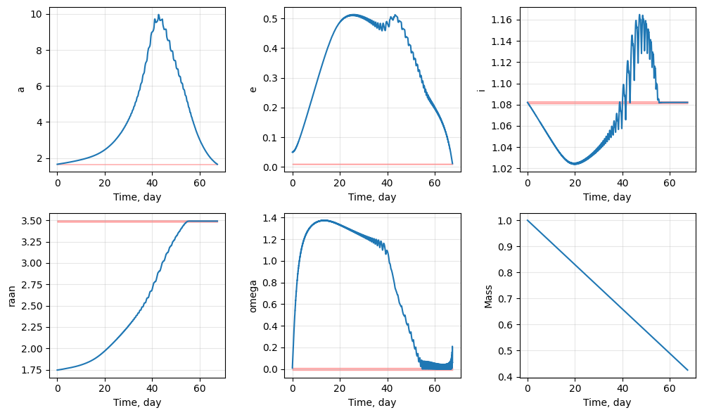
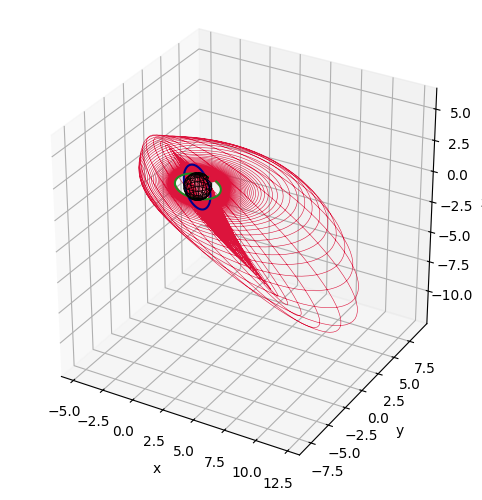
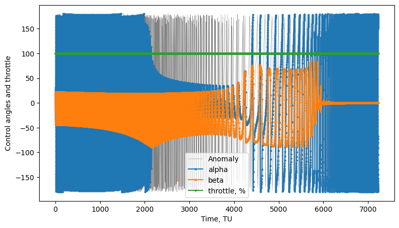

Keplerian Q-law: LEO transfer#
In this example, we make use of Keplerian elements to construct the transfer.
[1]:
import numpy as np
from numpy.random import rand
import matplotlib.pyplot as plt
import time
import sys
sys.path.append("../../../") # path to pyqlaw
import pyqlaw
We define the canonical scales, initial and final Keplerian elements, and spacecraft parameters. It is important for numerical stability to make sure that the initial and final elements are different in all components.
[2]:
# initial and final elements: [a,e,i,RAAN,omega,ta]
LU = 6378
GM_EARTH = 398600.44
VU = np.sqrt(GM_EARTH/LU)
TU = LU/VU
KEP0 = [10500/LU + 1e-6, 0.05, np.deg2rad(62) + 1e-6, np.deg2rad(100), 1e-2, 1e-2]
KEPF = [10500/LU, 1e-2, np.deg2rad(62), np.deg2rad(200), 1e-3, 0]
oe0 = np.array(KEP0)
oeT = np.array(KEPF)
print(f"oe0: {oe0}")
print(f"oeT: {oeT}")
# spacecraft parameters
MU = 1000 # spacecraft wet mass, kg
tmax_si = 1.45 # spacecraft thrust, Newton
isp_si = 1500 # spacecraft specific impulse, seconds
mdot_si = tmax_si/(isp_si*9.81) # kg/s
# non-dimensional quantities
mass0 = 1.0
tmax = tmax_si * (1/MU)*(TU**2/(1e3*LU))
mdot = np.abs(mdot_si) *(TU/MU)
tmax, mdot
oe0: [1.6462851 0.05 1.08210514 1.74532925 0.01 0.01 ]
oeT: [1.64628410e+00 1.00000000e-02 1.08210414e+00 3.49065850e+00
1.00000000e-03 0.00000000e+00]
[2]:
(0.00014797871723372909, 7.949972406630535e-05)
[3]:
oe0 = np.array(KEP0)
oeT = np.array(KEPF)
oe0, oeT
[3]:
(array([1.6462851 , 0.05 , 1.08210514, 1.74532925, 0.01 ,
0.01 ]),
array([1.64628410e+00, 1.00000000e-02, 1.08210414e+00, 3.49065850e+00,
1.00000000e-03, 0.00000000e+00]))
We can now initialize and setup the problem
[4]:
tol_oe = [1e-3, 1e-3, 1e-3, 1e-2, 1e-2]
prob = pyqlaw.QLaw(
integrator="rk4",
elements_type="keplerian",
verbosity=2,
print_frequency=2000,
use_sundman=True,
perturbations=None,
tol_oe = tol_oe,
)
[5]:
# setup problem
tf_max = 365.25 * 86400 / TU # max time, in canonical scales
t_step = np.deg2rad(5) # integration step, in angles
woe = [1.0, 1.0, 1.0, 1.0, 1.0]
prob.set_problem(
oe0, oeT, mass0, tmax, mdot, tf_max, t_step,
woe = woe)
prob.pretty()
Transfer:
a : 1.6463e+00 -> 1.6463e+00 (weight: 1.00)
e : 5.0000e-02 -> 1.0000e-02 (weight: 1.00)
i : 1.0821e+00 -> 1.0821e+00 (weight: 1.00)
raan : 1.7453e+00 -> 3.4907e+00 (weight: 1.00)
omega : 1.0000e-02 -> 1.0000e-03 (weight: 1.00)
[6]:
# solve
prob.solve()
prob.pretty_results()
iter | time | del1 | del2 | del3 | del4 | del5 | el6 |
0 | 1.751e-01 | 8.1159e-05 | 4.0046e-02 | -9.0498e-06 | -1.7453e+00 | 9.4363e-03 | 1.0126e-01 |
2000 | 3.823e+02 | 7.8798e-02 | 9.8076e-02 | -1.2320e-02 | -1.7289e+00 | 1.0842e+00 | 1.7344e+02 |
4000 | 7.934e+02 | 1.7819e-01 | 1.9737e-01 | -2.6297e-02 | -1.7062e+00 | 1.3082e+00 | 3.4793e+02 |
6000 | 1.245e+03 | 3.1035e-01 | 3.1052e-01 | -4.1222e-02 | -1.6699e+00 | 1.3661e+00 | 5.2243e+02 |
8000 | 1.761e+03 | 5.3294e-01 | 4.2364e-01 | -5.4819e-02 | -1.6002e+00 | 1.3598e+00 | 6.9629e+02 |
10000 | 2.415e+03 | 1.0772e+00 | 4.9448e-01 | -5.5602e-02 | -1.4539e+00 | 1.3060e+00 | 8.7077e+02 |
12000 | 3.606e+03 | 3.7294e+00 | 4.7944e-01 | -3.4918e-02 | -1.1034e+00 | 1.2072e+00 | 1.0458e+03 |
14000 | 6.364e+03 | 1.5548e+00 | 1.9228e-01 | -2.4272e-05 | 1.9842e-04 | 2.0205e-02 | 1.2211e+03 |
16000 | 7.005e+03 | 2.3137e-01 | 8.3950e-02 | -2.3303e-06 | 5.1388e-05 | 4.4019e-02 | 1.3956e+03 |
Target elements successfully reached!
Exit code : 2
Converge : True
Final state:
a : 1.6465e+00 (error: 2.1407e-04)
e : 1.1605e-02 (error: 1.6052e-03)
i : 1.0821e+00 (error: 4.7664e-07)
raan : 3.4907e+00 (error: 2.4015e-06)
omega : 5.7568e-02 (error: 5.6568e-02)
Transfer time : 7227.118600444861
Final mass : 0.4254460654701723
[7]:
# plots
fig1, ax1 = prob.plot_elements_history(to_keplerian=True, TU=TU/86400, time_unit_name="day")
fig2, ax2 = prob.plot_trajectory_3d(interpolate=False, sphere_radius=6378/LU)
fig3, ax3 = prob.plot_controls()
plt.show()



[ ]:
[ ]:
[ ]: